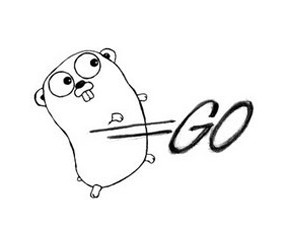

Go and Revel Framework

Universidad Técnica Nacional
Estudiante:
Luis Alberto Rodríguez Villalobos
Profesor: Misael Matamoros
Go
La Flexibilidad de Python con la rapidez del código de máquina
- Programación imperativa, estructurada y libre.
- Compilado, estática y fuertemente tipado.
- No es orientado a objetos.
- Es un lenguaje moderno, por lo que bebe de lo mejor de muchos lenguajes
- Combina una sintaxis parecida a C con las características y facilidad de lenguajes dinámicos como Python.
Continuación...
- GO acierta con una sintaxis classra y concisa
- Go no está orientado a objetos por que no existe jerarquía de tipos pero implementa interfaces
-
Recolector de basura eficiente, libre de latencia.
- Soportado en Google por App Engine
Historia
- Creado por Google.
- Lanzado en Noviembre del 2009
- Diseñado por: Robert Giresemer, Rob Pike y Ken Thompson.
- Influencias de C, Limbo, Modula, Newsqueak, Oberon, Pascal y Python.
- Soporte para AJAX.
Ventajas:
- Sintaxis concisa
- La Curva de Aprendizaje de KumbiaPHP es muy corta, y si a esto le agregamos experiencia en el manejo de Programación Orientada a Objetos, será mas rápida.
- Sistema de Plantillas sencillo.
- Separación MVC.
- Soporte para AJAX.
Instalación
Paso1: Descargar su archivo comprimido desde https://github.com/KumbiaPHP/KumbiaPHP/
Paso2:
Configurar Servidor Web
- #a2enmod rewrite
- Editar el archivo con direccion etc/apache2/default-server.conf
- AllowOverride None debemos de cambiarlo por AllowOverride ALL
- Se reinicia el servicio
/etc/init.d/apache2 restart